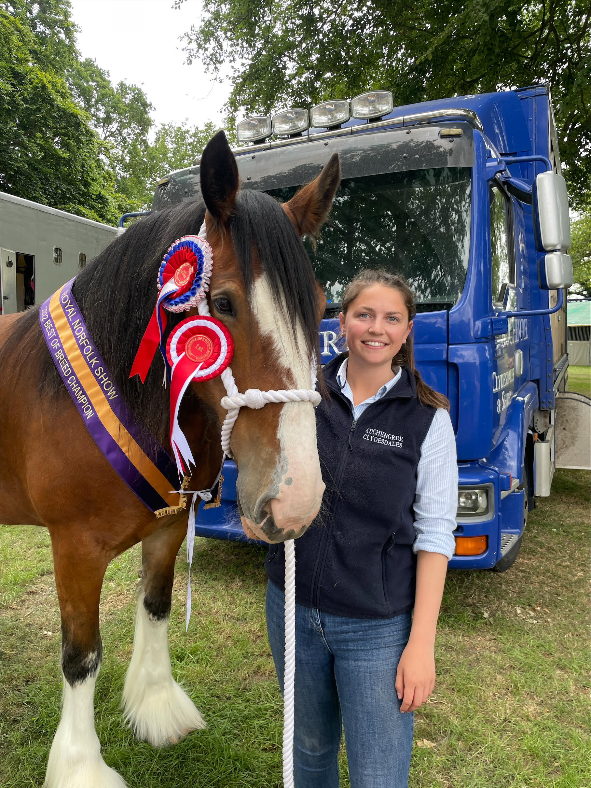
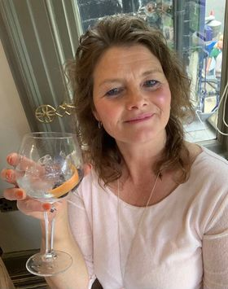
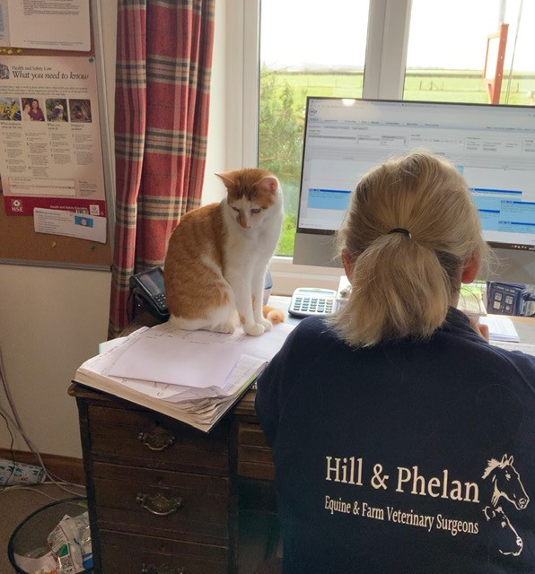
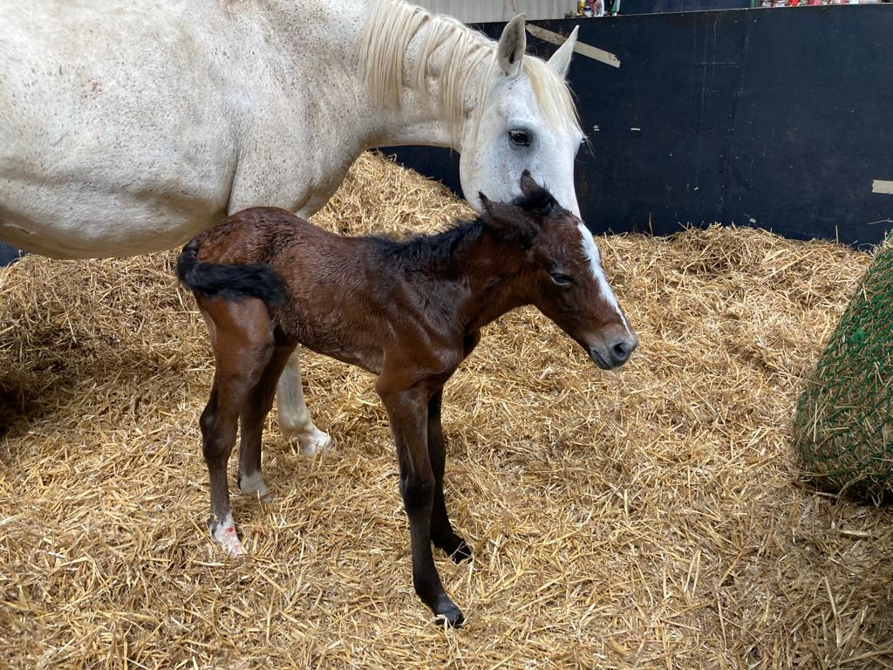

James Phelan
DVM MRCVS Veterinary Surgeon
I am from Straffan, Co. Kildare, Ireland. I graduated from Szent Istvan University, Budapest.
I moved to the United Kingdom to indulge my passion for Equine work and joined Allan Heath
Equine Veterinary Surgeons in Louth, where I got to know some fantastic people across
Lincolnshire. I completed the Twemlows Equine Reproduction Course and I am constantly upgrading
my skill set to improve our services offered. I have been loving every minute since settling
into the lovely way of life that people in this part of the world live.

I have grown up steeped in horses and farming. My family Farm Weylands Stud
has been breeding Thoroughbred Racehorses and Pedigree Texel sheep along with
Suffolk and Cheviot sheep since 1978. In 2016 we bred the World's Top Rated Sprinter Limato,
for which my Father won numerous awards. I am the eldest of three. My sister Rachel has a Degree in Botany
from Trinity and is completing her Masters in Teaching. My brother Jonathan is doing a History and English
Degree in UCD and has been a professional Rugby player playing with Munster and Saracens.
I have been an avid sportsman since secondary school. I have played rugby, hurling, gaelic football, football and hockey.
I am currently playing with the Louth Hockey Club's Mens First team where we have won back to back promotions. I am extremely
interested in all aspects of the bloodstock industry including Yearling preparation.
I also love to spend time going out for a nice meal and I enjoy reading, sports, podcasts, horse racing and chatting with my family and friends.

Lyndsay Burks
Veterinary Surgeon
Lyndsay joined the team in July 2022 having just graduated from Royal Dick School of Veterinary Studies in Edinburgh. She grew up on a farm in central Scotland before her family moved to Lincolnshire in 2019. She breeds Clydesdale and Shire horses alongside her parents. Lambing is her favourite time of year - as well as lambing at home, she’s lambed in Wales, Loch Lomond and the Scottish Borders. Lyndsay has a keen interest in all things reproduction - cattle, sheep and horses! She spends most weekends travelling up and down the country competing her horses with several younger siblings in tow. Lyndsay looks forward to meeting more people on the road and through young farmers!
Helen Slingsby
Practice manager
I am married to Andrew have three children, Brad, Robbie and Summer, lots of dogs and my daughter owns a horse called Rowan. I have been with Hill and Phelan since September 2020 very proud at how much we have developed and grown and thoroughly enjoy the day to day challenges of helping run the practice as well as trying to keep the vets in order. My time out of work is mainly spent helping support my husband with our Gundog training business. We also compete in Field Trials, working tests and occasionally breed health tested Labrador Retrievers. We are very proud to have bred and trained many Field Trial Champions and Winners and have dogs all over the world.


Vicki Booth
Office Manager
I joined the team at Hill and Phelan Vets in April 2021 having mostly previously worked in Animal Health and equestrian retail since graduating with a Business Studies degree in 1999. I gained the AMTRA qualification for advising and dispensing a number of different animal medicines, in particular worming products in my first role over 20 years ago and have kept up to date with continuing CPD. I grew up in Lincolnshire and have always been surrounded by animals following my veterinary surgeon dad around on his visits from his practise that was based in Horncastle. My particular interest is the horses as I have ridden since a young age. I have travelled the country extensively competing at county level mounted games and being an active member of the local pony club. I still enjoy looking after our 4 horses and riding but at a much slower pace nowadays but still travel extensively being the unpaid groom and chauffeur for my daughter who has followed in my footsteps competing. I also have a son who prefers football! I have a keen interest in Hockey too playing for Louth for several years alongside Cath.
Nicki Turner
Accounts manager
